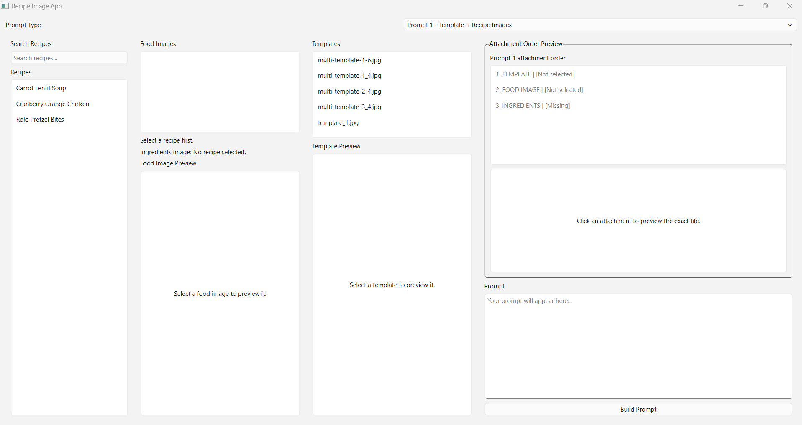
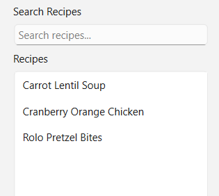
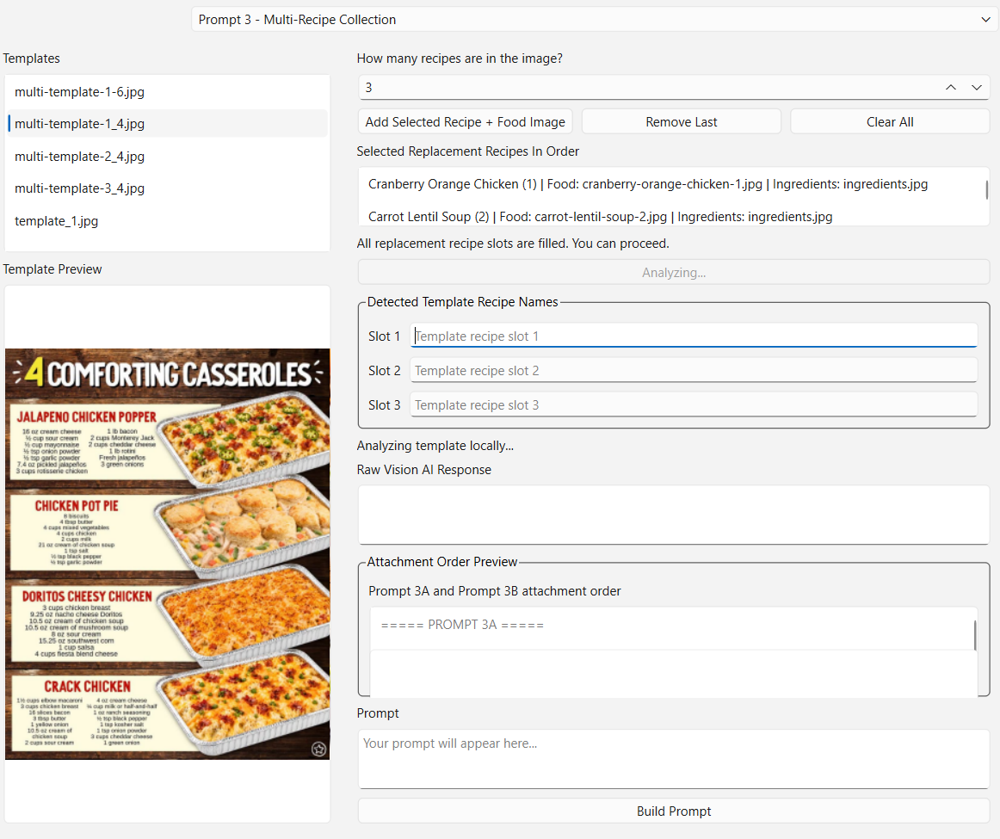
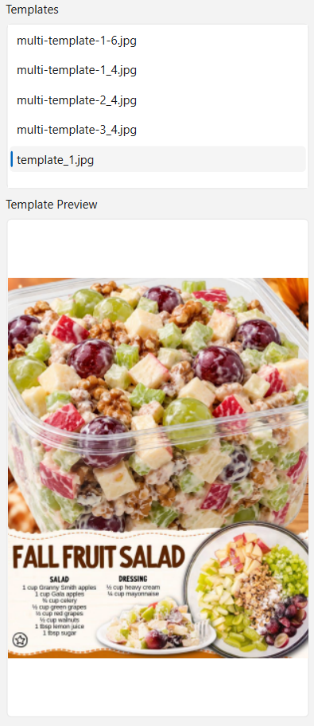
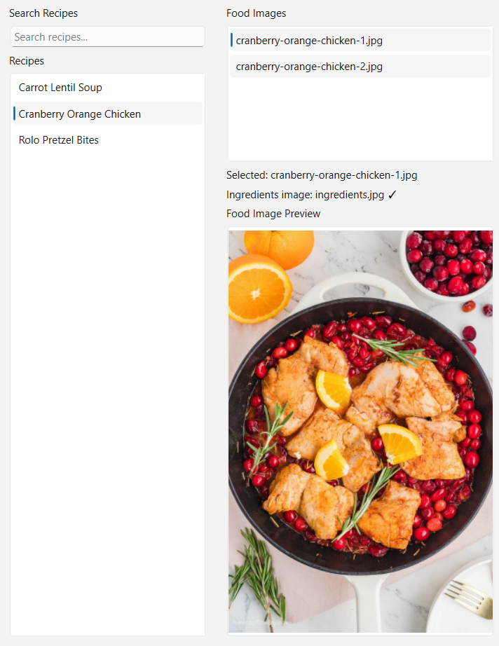
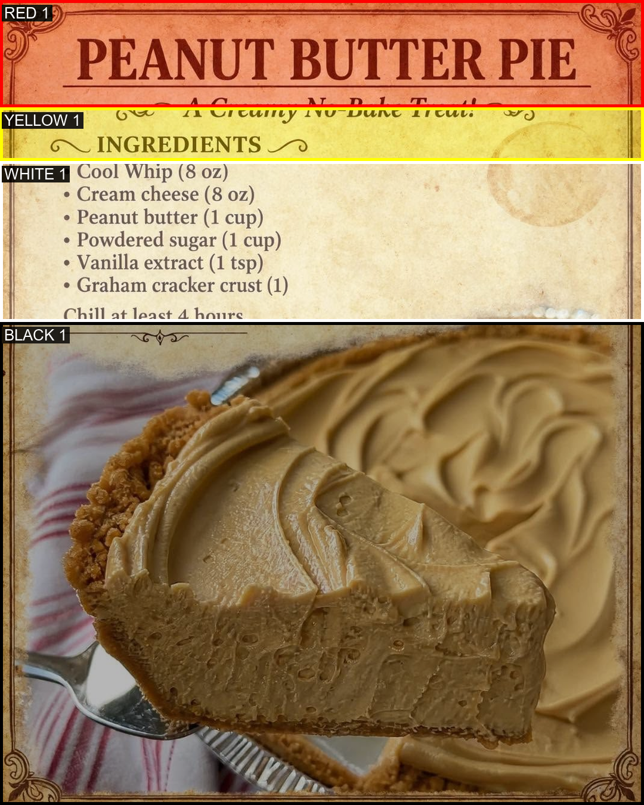
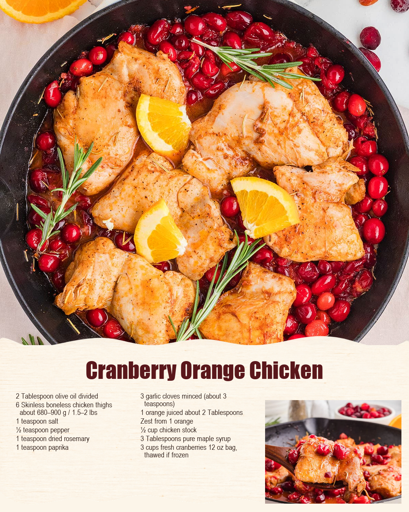
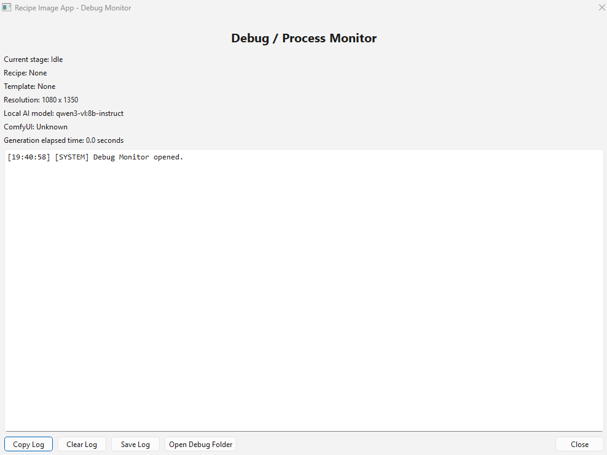

PYTHON • AUTOMATION • LOCAL AI
Recipe Graphics Automation
A local application designed to automate the creation of recipe graphics using reusable templates, recipe images, ingredient data, layout analysis, and local image-generation tools.

OVERVIEW
Turning a repetitive workflow into a tool
The project started from a repetitive image-production workflow involving recipe photos, ingredient lists, reusable graphic templates, and generated images.
Instead of manually organizing every recipe and recreating the same steps each time, I began building one local program that could manage the process from recipe selection through image generation and export.
Each recipe is stored inside its own folder with food images and an ingredients image, while a separate template library provides reusable visual layouts.
The application connects these pieces together while still giving the user control over selected recipes, templates, images, and the final result.
WORKFLOW
From recipe folder to finished graphic
Select Recipe
Choose one or multiple recipes from the recipe library using a searchable interface.
Choose Template
Select a reusable visual template and preview its structure before generating the final graphic.
Map Images
Match recipe photos and ingredient information to the correct areas of the selected template.
Analyze Layout
Detect important template areas such as hero images, cutouts, titles, and ingredient regions.
Generate
Use local AI and image-processing tools to produce the recipe graphic while preserving the requested visual structure.
Export
Save the completed image at the required 1080x1350 output size.
RECIPE MANAGEMENT
Selecting and organizing recipes
The application supports both single-recipe and multi-recipe workflows while keeping the recipe library searchable and organized.

Recipes can be searched instead of requiring the user to manually browse through every folder.
A single recipe can be selected for a standard one-recipe template.
Multiple recipes can be assigned to ordered slots for templates containing several food images.
Each recipe has its own folder containing food images and a dedicated ingredients image.
MULTI-RECIPE MODE
Building graphics with several recipes
Some templates contain several food-image slots, so the tool supports selecting multiple recipes and assigning them in a specific order.

TEMPLATE SYSTEM
Reusing visual layouts
Templates define the visual structure while recipe content changes from one generated graphic to another.

DESIGN GOAL
The goal is not to generate a completely new layout every time. The tool is designed to understand and reuse an existing template's structure while replacing the food, recipe title, and ingredient content.
IMAGE MANAGEMENT
Previewing recipe images
Being able to see source food images before generation makes it easier to verify that the correct recipe content has been selected.

LAYOUT ANALYSIS
Understanding the template
A major technical challenge is identifying where different pieces of recipe content belong inside templates that originally exist as flat images.

Identifies the primary area used for the main recipe image.
Supports additional circular, oval, or smaller image regions depending on the template.
Identifies where the recipe name belongs without covering important visual content.
Identifies the region reserved for ingredient text, including layouts that use several columns.
INGREDIENTS
Turning ingredient images into usable content
Each recipe folder includes an ingredients.jpg image containing the recipe's ingredient information.
OCR and layout-analysis experiments are used to identify and extract useful information so the final graphic can place ingredient text into the correct template region.
The target format avoids unnecessary content such as cooking steps, checkboxes, or prices and focuses only on the ingredient information needed for the graphic.
LOCAL AI WORKFLOW
Connecting the application to ComfyUI
ComfyUI
Used as the local image-generation workflow behind parts of the graphic-generation process.
Reusable Prompts
Different prompt types are used depending on whether the task involves full layouts, food images, multi-slot templates, or ingredient replacement.
Multiple Machines
The workflow has been tested across multiple computers with different GPU resources while preserving the same overall recipe system.
OUTPUT
Producing the finished graphic
The final goal is a repeatable workflow that produces consistent 1080x1350 recipe graphics while reducing the amount of manual work required.

DEVELOPMENT
Testing and debugging the pipeline
A large part of developing the tool has involved testing individual stages instead of treating generation as one black-box process.

ITERATIVE DEVELOPMENT
The application has been built in stages. Individual problems such as recipe selection, image previews, layout detection, OCR, template mapping, and export have been tested separately before being connected into the larger workflow.
PROBLEM SOLVING
Challenges I've worked through
Template Detection
A flat image does not naturally describe which regions represent food, titles, or ingredients, so that structure has to be identified separately.
OCR Accuracy
Extracting useful ingredient information from images can produce noisy results that require cleanup and better interpretation.
Image Placement
Recipe photos need to fit differently shaped template regions without losing important parts of the food image.
Multi-Recipe Layouts
Templates containing several recipes require predictable ordering and correct assignment of each image to its intended slot.
Consistency
Generated images need to follow the original template structure instead of changing the design unexpectedly.
Hardware Differences
The application and generation workflow need to remain usable across machines with different amounts of available GPU power.
CURRENT DIRECTION
Moving toward a complete pipeline
The core application already includes recipe selection, search, previews, multi-recipe support, and several parts of the template-analysis workflow.
Continued work is focused on improving automatic composition, ingredient text placement, stable template mapping, and the final generation pipeline.
I also want the workflow to make failed generations easier to redo or correct without restarting the entire process.
PROJECT GALLERY